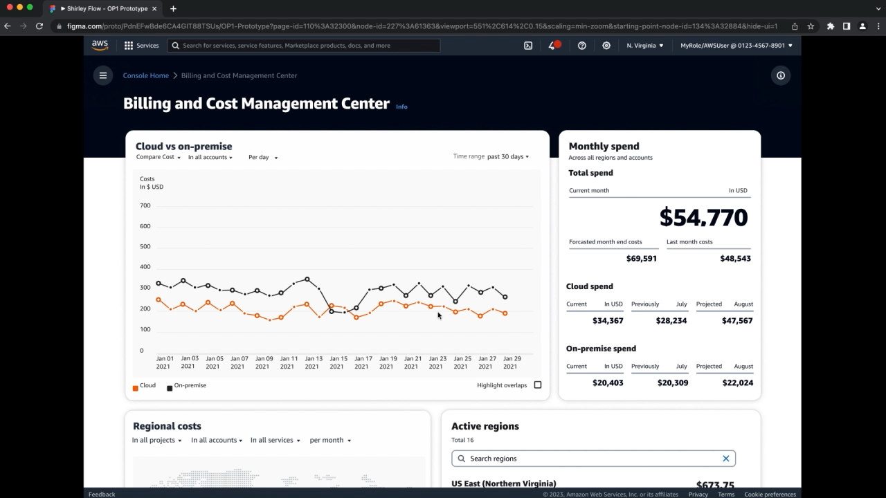
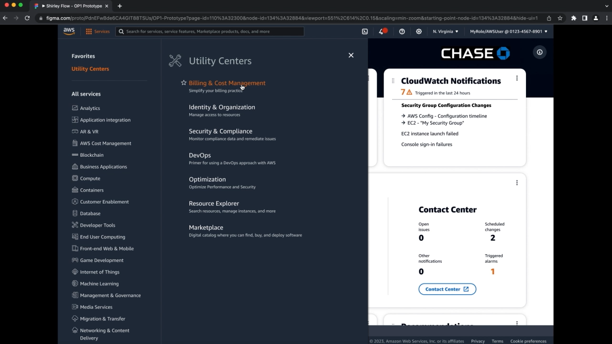

AWS Utility Centers — Role‑Based Dashboards in the Console
A new, role-based dashboard experience for Billing, Compliance, and DevOps that gives customers one‑click access to essential utility services—so they can monitor costs, troubleshoot pipelines, and scale environments without hopping across 200+ consoles.
Work the Way You Work
Seven pre‑built Utility Centers group frequently connected services by job function—so customers act from a single screen with a uniform, consistent look and feel.
Problem
With 200+ AWS services, customers had to stitch together multiple consoles to accomplish what felt like a single, role‑based task. For example, continuous delivery required touching CodePipeline, CodeBuild, and CodeDeploy—slowing teams and introducing risk.
Outcome
- Introduced Utility Centers: role‑specific dashboards for Billing, Compliance, DevOps, and more.
- One‑click access to essential utility services for analyzing, configuring, and maintaining applications.
- Uniform UI across centers; grouped services by job function to reduce hunting and context switching.
- Launched seven pre‑built dashboards accessible from the Services menu.
My Role
Product strategy: Positioned Utility Centers as a role‑based operating layer; defined success metrics (task completion, time‑to‑resolution, feature adoption).
Experience lead: Co‑created dashboard IA, card patterns, and action models to keep users in‑flow; ensured a consistent, Console‑native visual language.
Cross‑functional facilitation: Partnered with Product, Strategy, and Data & Analytics to prioritize use cases (cost monitoring, CI/CD troubleshooting, compliance posture).
Launch storytelling: Authored announcement narrative and demo flows; prepared executive and publisher readouts; aligned GTM with partner teams.
Users & Jobs
- DevOps: troubleshoot CI/CD, view pipeline health, and take action from one screen.
- Finance/Billing: monitor storage and compute costs; forecast and allocate.
- Security/Compliance: assess posture, surface violations, and remediate quickly.
Insights
- People think in jobs, not services—dashboards must reflect role intent.
- Grouping frequently connected services reduces time‑to‑action and errors.
- Uniform patterns across centers lower learning curve and increase adoption.
Principles
- Start from the job. Design for role goals first.
- Keep users in‑flow. Inline actions and deep links, not hop‑outs.
- Consistency over novelty. A shared, Console‑native pattern library.
Experience Highlights
Role‑Based Grouping
Each Utility Center clusters the most relevant services, metrics, and quick actions for that role—e.g., DevOps sees pipeline status and deployment actions; Billing sees top cost drivers and anomaly alerts.
Uniform Interactions
Cards, filters, and tables follow a shared pattern library so teams can move between centers without relearning controls.
Actionable Dashboards
Not just read‑only: users trigger common workflows (scale up, pause pipeline, open budget drill‑down) directly from the dashboard.
Seven Pre‑Built Centers
Accessible from the Services menu; designed to be extensible as new roles or utility areas emerge.
Impact & Signals
- Time‑to‑Action ↓ by reducing console hops across related services.
- Task Completion ↑ through inline actions and deep links for common jobs.
- Adoption ↑ driven by uniform, role‑based patterns and discoverability from the Services menu.
Customer Voice
Artifacts
- Announcement press release & PRFAQ
- Dashboard IA, wireframes, and interaction specs
- Pattern library updates for shared components
- Executive narrative, demo scripts, and GTM enablement
What I’d Evolve Next
- Personalized modules by role + account context (recent activity, anomalies, ownership).
- Pluggable cards marketplace so service teams can publish role‑aware widgets.
- Observability for dashboard quality (usage, time‑to‑action, retention by role).
Utility Centers — Visual Walkthrough
A visual progression through the Utility Centers dashboards — from early wireframes to the final role-based experience.

1. Initial dashboard concept layout showing navigation and role grouping.
View full size
2. Role-specific modules surfaced for Billing, Compliance, and DevOps use cases.
View full size

Fintech Walkthrough
- Olympics PX component library & partner templates
- Live/VOD navigation wireframes and flows
- Connector metadata schema & mapping rules
- Artwork automation dashboards & QA scripts
Shirley's Pain Points
- Comcast Xfinity — Olympics hub hero + Up Next
- Verizon Fios — event trays & replay entry points
- Dish & Sling — pictograms and highlights rail


DevOps Walkthrough
- Olympics PX component library & partner templates
- Live/VOD navigation wireframes and flows
- Connector metadata schema & mapping rules
- Artwork automation dashboards & QA scripts
Arnav's Pain Points
- Comcast Xfinity — Olympics hub hero + Up Next
- Verizon Fios — event trays & replay entry points
- Dish & Sling — pictograms and highlights rail